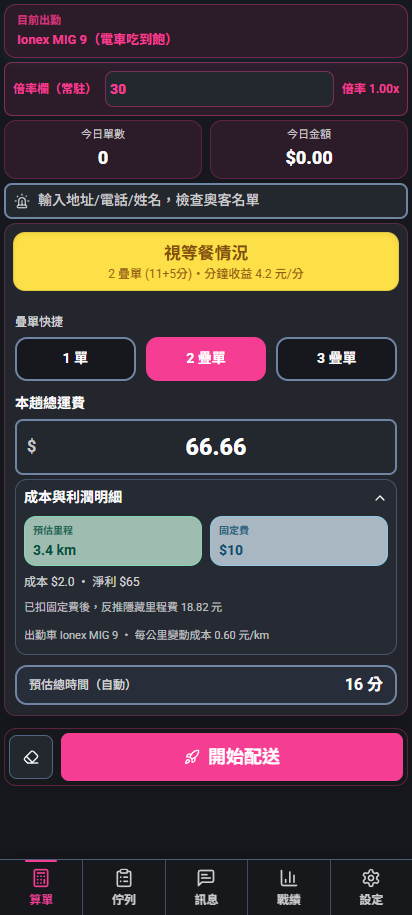
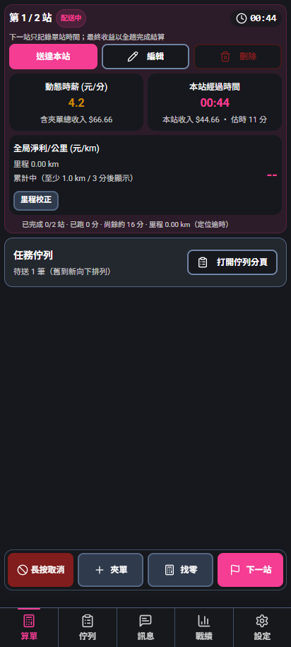
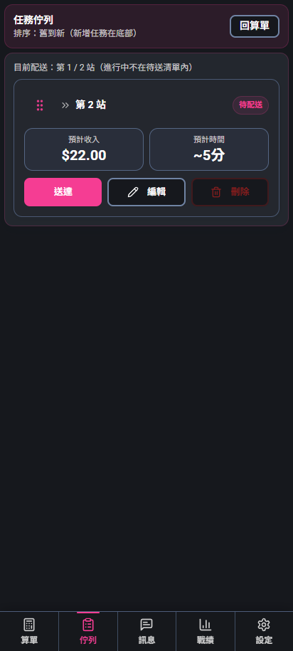
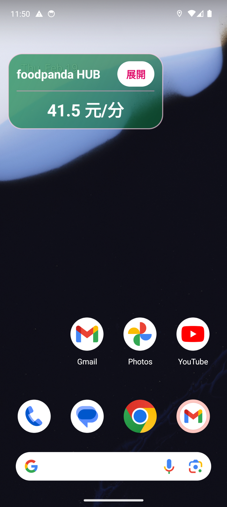
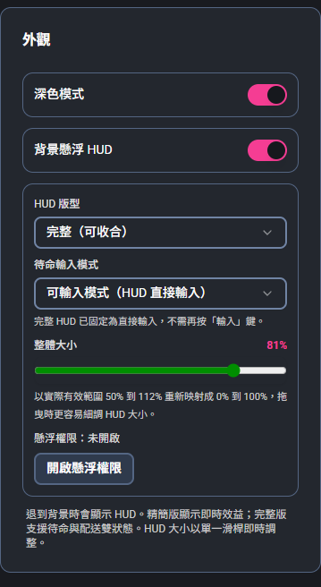
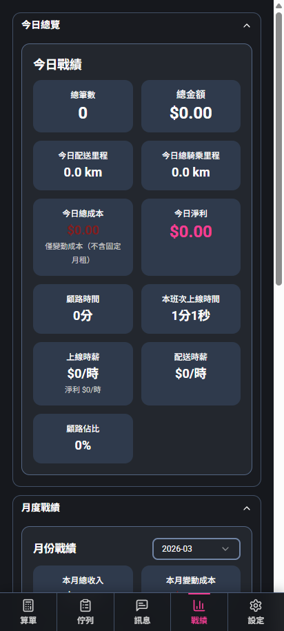
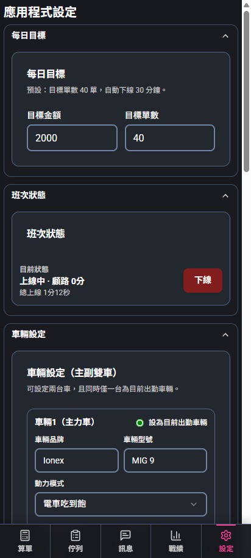

整合算單評估、背景 HUD、疊單/夾單管理、訊息範本、戰績統計與成本淨利追蹤。告別憑感覺跑單，精準掌握每分鐘真實收益！

接單前預判風險
接單前先看每分鐘收益與風險，不再被表面總金額騙了。
支援複雜情境
完美支援單筆、疊單、夾單三種評估情境，重新估算效益。
跑單直接管理
跑單中可直接管理站點、里程校正、找零與快速新增夾單。
背景 HUD 顯示
退到背景或看導航時，仍可透過懸浮 HUD 持續查看即時效益。
內建實用工具
內建訊息範本、戰績統計、每日存檔與 CSV/JSON 匯出功能。
精算真實淨利
依據你的車種與成本模型自動估算淨利，精準計算時間成本。
算單頁是整個程式的主入口。直接輸入總運費、切換單數，立即看到這趟的時間效益與成本拆解。
開始配送後，畫面轉為以「站點與即時收益」為核心的操作頁。你看到的不再只是接單評估，而是整趟配送的執行狀況。




退到背景看導航、回 Line 時，不需一直切換 App。透過懸浮 HUD 持續看見即時效益！
這不是裝飾性設定，而是真正會影響你淨利估算的數據後台。一天結束後，把戰績留在手機裡。


總運費高不代表值得跑！時間、固定費、夾單風險、距離與車輛成本都會吃掉實際收益。
系統會依據單數自動帶入基準成本（單筆基礎成本、夾單基礎成本），並檢查以下高風險條件：
本程式非 Google Play 上架軟體，請按照以下步驟安心安裝。
點擊下方下載按鈕，將安裝檔儲存至您的 Android 手機中。
開啟檔案時若遭系統阻擋，請至手機「設定」，開啟「允許這個來源的應用程式」。
開啟程式後，請依提示開啟「懸浮視窗」與「精準定位」權限即可開始算單。
立刻免費下載安裝，把複雜的心算與記錄交給程式，你只需專注騎車與安全送餐。
免費下載熊貓助手 APK當前版本：最新版本 ｜ 支援 Android 手機